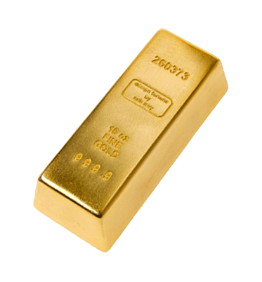

Залгогът на злато може да бъде сключен в срок до 1 месец. Стойността за залог на един грам злато варира в зависимост от чистотата на пробата и изкупната цена на метала в момента. Ориентировачно, за един грам злато с проба 585 (14к), цената обикновено варира между 30 и 40 лв.
Заложната къща приема техника, която в момента е актуална (черна и бяла техника, IT продукти и др.). Максималният срок за сключване на договор за залог на техника е 2 седмици, като за техники произведени през тази и предходната година той може да достигне до 1 месец. Сумата, която заложната къща отпуска варира от 1/5 от стойността на вещта нова (при по-стари и неактуални вещи), до 1/3 от стойността й (когато е сравнително нова, пълен комплект и актуална).

Срокът за залог на GSM апарати е 2 седмици (при по-стари и неактуални устройства) до 1 месец (за устройства от тази и миналата година). Сумата, която заложната къща отпуска е в размер подобен на тази при залог на друга техника.